Releasenotes eBlinqx Hypotheekadvies – Juni 2024
Onderstaande updates hebben wij in de maand juni doorgevoerd:
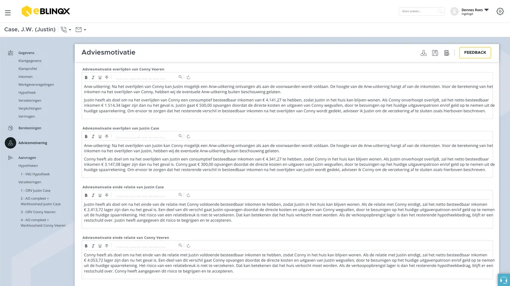
IT-20262: ANW-uitkering bij overlijden
Wij hebben een tekstblok inzake de ANW toegevoegd: 'Na het overlijden van Conny kan Justin mogelijk een Anw-uitkering ontvangen als aan de voorwaarden wordt voldaan. De hoogte van de Anw-uitkering hangt af van de inkomsten. Voor de berekening van het inkomen na het overlijden van Conny, hebben wij de eventuele Anw-uitkering buiten beschouwing gelaten'.
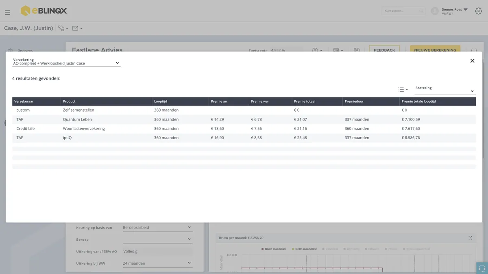
IT-18599: Weergave Woonlastenverzekeraars
We hebben een nieuwe functie toegevoegd die de vergeleken woonlastenverzekeraars in een lijst weergeeft. Deze lijst wordt een bijlage bij het adviesrapport. In het adviesrapport hebben we ook de kenmerken toegevoegd die hierboven te zien zijn.
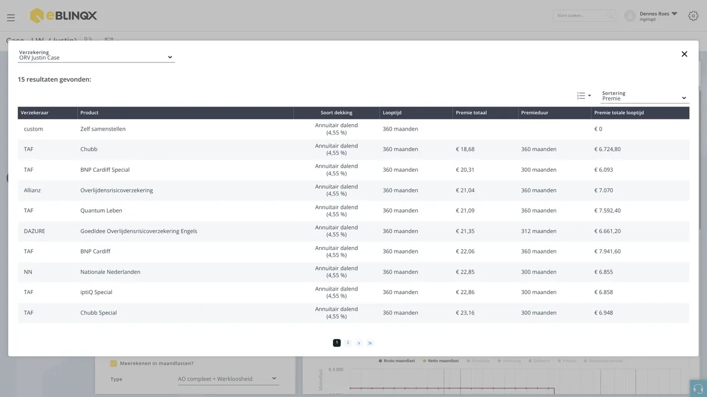
IT-18599: Weergave ORV-verzekeraars
We hebben een nieuwe functie toegevoegd die de vergeleken overlijdensrisicoverzekeraars in een lijst weergeeft. Deze lijst wordt een bijlage bij het adviesrapport. In het adviesrapport hebben we ook de kenmerken toegevoegd die hierboven te zien zijn.
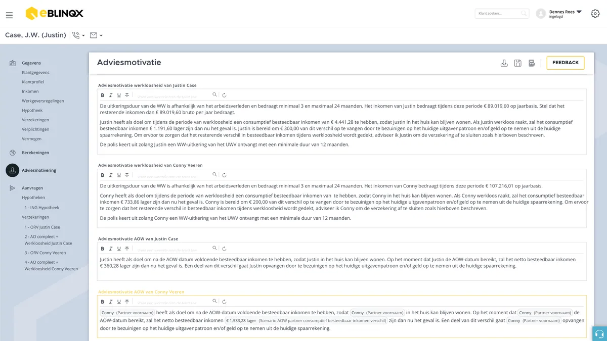
IT-20243: Aanvullende tekst in het adviesrapport bij thema werkloosheid
Wij hebben de tekst in het adviesrapport bij het thema Werkloosheid aangepast.
[Zowel in GHF- als CBI rapport] [Nieuw tekstblok bij toelichting] De uitkeringsduur van de WW is afhankelijk van het arbeidsverleden en bedraagt minimaal 3 en maximaal 24 maanden. Het bruto jaarinkomen bedraagt tijdens deze periode € 89.019,60 op jaarbasis.
[Alleen in het CBI-rapport aangepast] Justin heeft als doel om tijdens de periode van werkloosheid een consumptief besteedbaar inkomen van € 4.341,28 [Consumptief inkomen tijdens WW + uitkering nieuwe verzekering] te hebben, zodat Justin in het huis kan blijven wonen. Als Justin werkloos raakt, zal het consumptief besteedbaar inkomen € 1.191,60 lager zijn dan nu het geval is. Justin is bereid om € 300,00 van dit verschil op te vangen door te bezuinigen op het huidige uitgavenpatroon en/of geld op te nemen uit de huidige spaarrekening. Om ervoor te zorgen dat het resterende verschil in besteedbaar inkomen tijdens werkloosheid wordt gedekt, adviseer ik Justin om de verzekering af te sluiten zoals hierboven beschreven
[Aanvullend tekstblok in zowel GHF als CBI rapport] De polis keert uit zolang Justin een WW-uitkering van het UWV ontvangt met een minimale duur van 12 maanden.
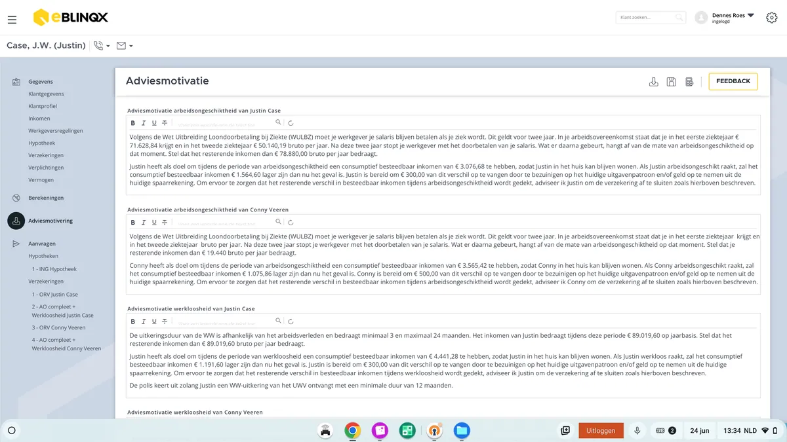
IT-20240: Aanvullend tekst in het adviesrapport bij thema Arbeidsongeschiktheid
We hebben de eerste twee ziektejaren tekstueel toegevoegd aan het thema Arbeidsongeschiktheid in het adviesrapport.
[Aanvullend tekstblok bij toelichting] Volgens de Wet Uitbreiding Loondoorbetaling bij Ziekte (WULBZ) moet je werkgever je salaris blijven betalen als je ziek wordt. Dit geldt voor twee jaar. In je arbeidsovereenkomst staat dat je in het eerste ziektejaar € 71.628,84 bruto per jaar [Rekeninkomen WULBZ 1e jaar] krijgt en in het tweede ziektejaar € 50.140,19 bruto per jaar [Rekeninkomen WULBZ 2e jaar]. Na deze twee jaar stopt je werkgever met het doorbetalen van je salaris. Wat er daarna gebeurt, hangt af van de mate van arbeidsongeschiktheid op dat moment. Stel dat het resterende inkomen dan € 78.880,00 bruto per jaar bedraagt.
[Alleen in CBI-rapport aangepast] Justin heeft als doel om tijdens de periode van arbeidsongeschiktheid een consumptief besteedbaar inkomen van € 4.341,28 [CBI tijdens periode van AO + uitkering nieuwe verzekering] te hebben, zodat Justin in het huis kan blijven wonen. Als Justin arbeidsongeschikt raakt, zal het consumptief besteedbaar inkomen € 1.564,60 lager zijn dan nu het geval is. Justin is bereid om € 300,00 van dit verschil op te vangen door te bezuinigen op het huidige uitgavenpatroon en/of geld op te nemen uit de huidige spaarrekening. Om ervoor te zorgen dat het resterende verschil in besteedbaar inkomen tijdens arbeidsongeschiktheid wordt gedekt, adviseer ik Justin om de verzekering af te sluiten zoals hierboven beschreven.
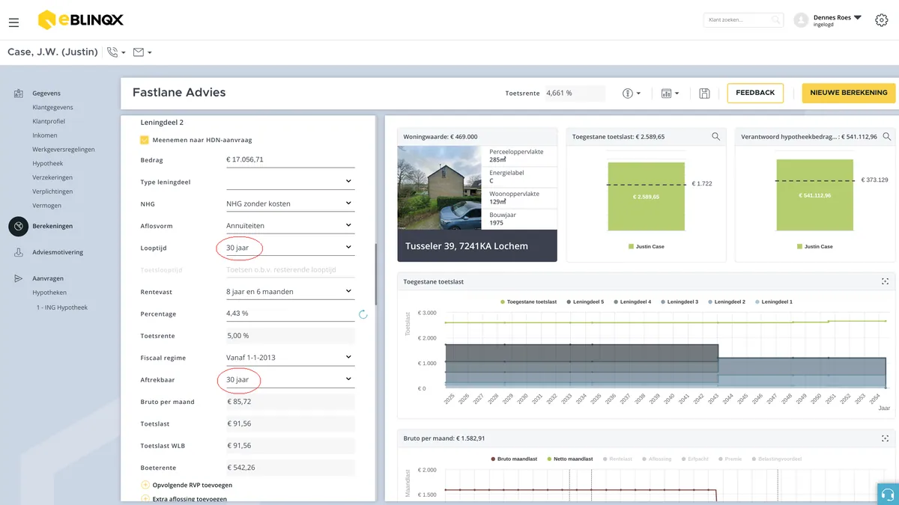
IT-20260: Ontslag uit hoofdelijke aansprakelijkheid: Bij het inladen van een dossier uit de database staat standaard de doelstelling 'Huidige situatie evalueren' aan. Als de adviseur de doelstelling wijzigt naar 'Ontslag uit hoofdelijke aansprakelijkheid', worden alle leningdelen gesplitst. Hierbij worden de hoogte van de lening, de resterende rentevastperiode, het rentepercentage, de resterende renteaftrek en de resterende looptijd overgenomen van het afgesplitste leningdeel en de resterende looptijd en de resterende renteaftrek automatisch op 30 jaar gezet.
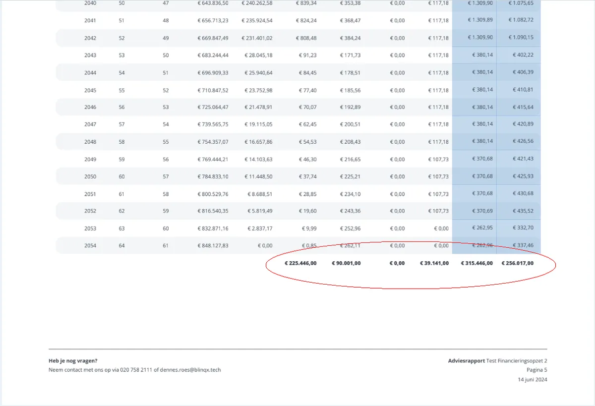
IT-18958: Wij hebben de bijlagen ‘Maandlastoverzicht’ en ‘Maandlastoverzicht per leningdeel’ in ons adviesrapport voorzien van de regel 'Totaal'.
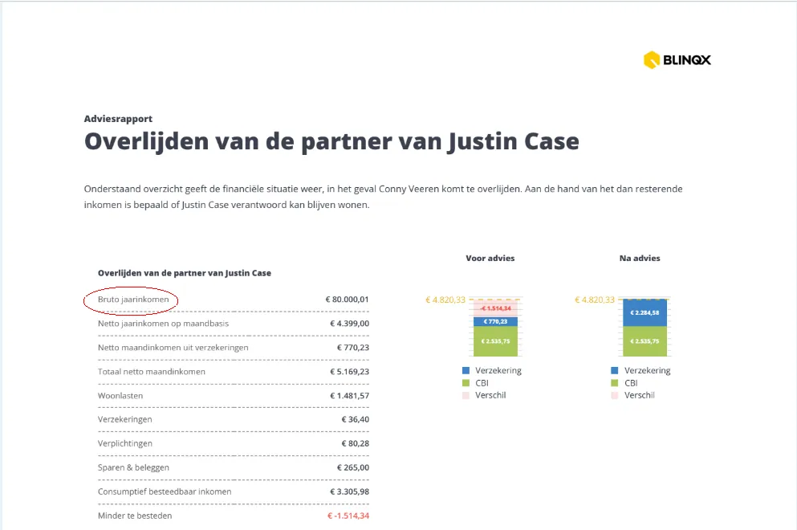
IT-20245: In het adviesrapport bij het thema 'Overlijden partner' hebben wij de term 'Bruto jaarinkomen gezamenlijk' aangepast in 'Bruto jaarinkomen'.
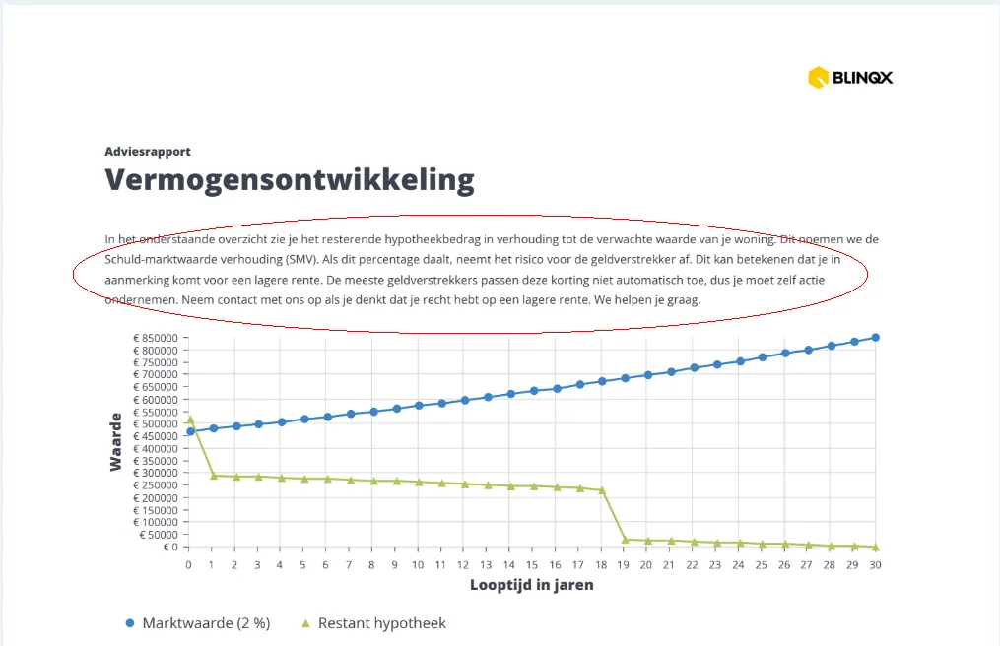
IT-20242: Wij hebben de inleidende tekst in ons adviesrapport bij het onderdeel 'Vermogensontwikkeling' aangepast.
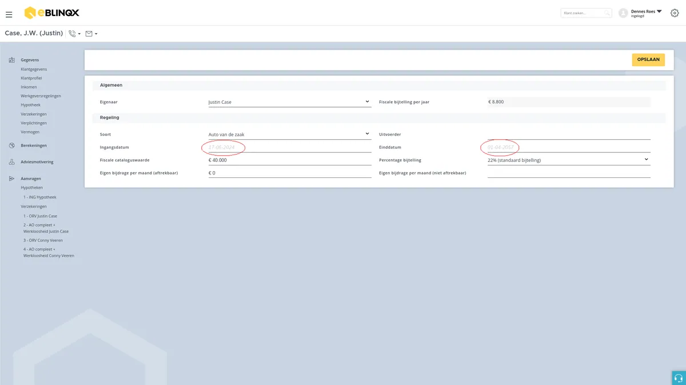
IT-16598: Bij de werkgeversregelingen hebben wij de regeling 'Auto van de zaak' nu automatisch voorzien van een ingangdatum (systeemdatum) en een einddatum (AOW-datum).
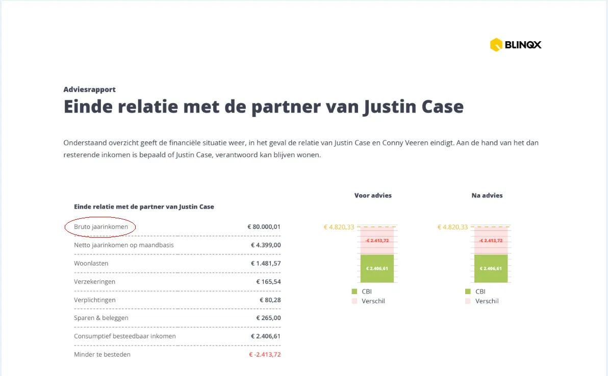
IT-20245: In het adviesrapport bij het thema 'Einde relatie' hebben wij de term 'Bruto jaarinkomen gezamenlijk' aangepast in 'Bruto jaarinkomen'.
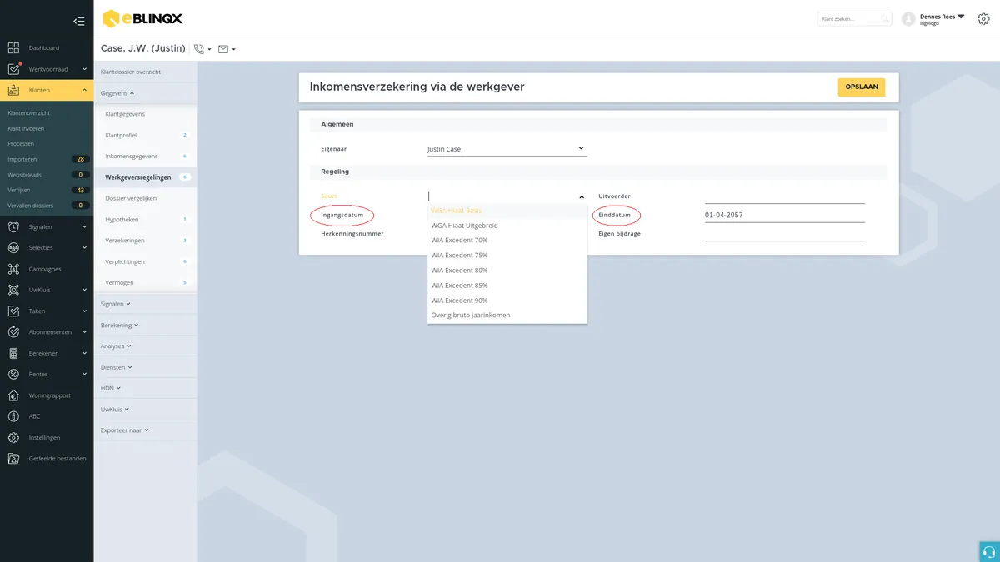
IT-16597: Bij de inkomensverzekeringen via de werkgever hebben wij de ingangdatum en de einddatum nu geprefilled met respectievelijk de systeemdatum en de AOW-datum.
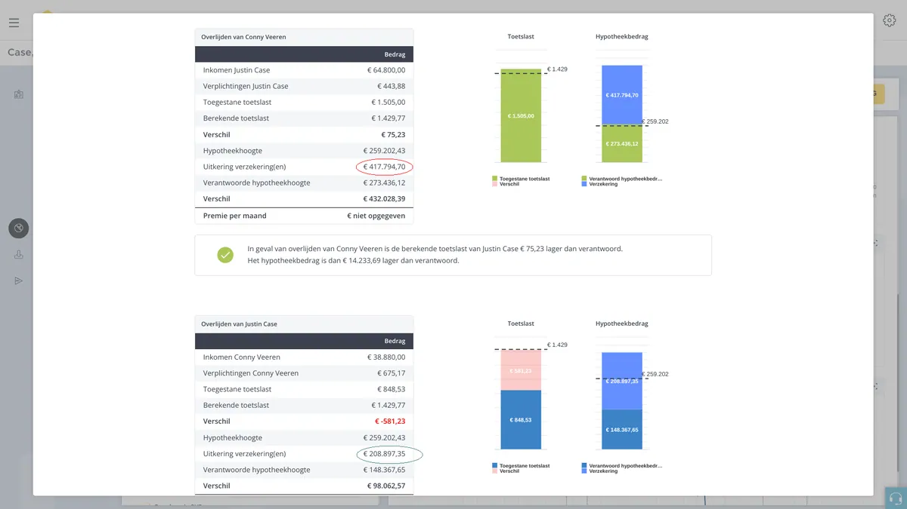
IT-20235: Wanneer je een bestaande overlijdensrisicoverzekering op twee levens in de database had ingevoerd, werd het verzekerde bedrag op het leven van de mede-aanvrager dubbel geteld, dit is nu gefixt.
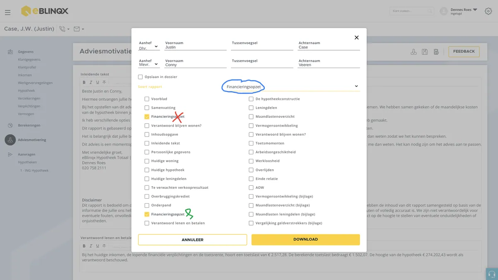
IT-20234: Indien een adviseur alleen een financieringsopzet wil downloaden, via onze modal bij het onderdeel ‘Adviesmotivering’ dan stond de standaard keuze op de financieringsopzet uit de samenvatting. Dit is nu aangepast in de financieringsopzet uit het adviesrapport.
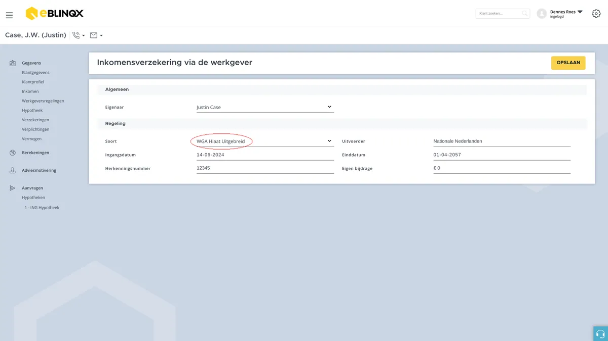
IT-20166: Bij de werkgeversregelingen → Inkomensverzekering hebben wij de tenaamstelling ‘WIA uitgebreid’ aangepast in ‘WGA Hiaat Uitgebreid’.
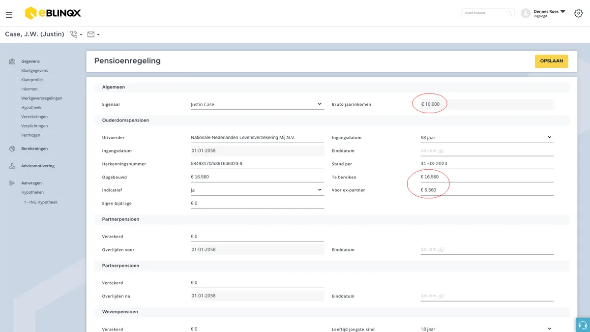
IT-16923: Bij de werkgeversregelingen -> Pensioenregeling wordt het ouderdomspensioen voor de ex-partner, voor het berekenen van het bruto jaarinkomen uit deze pensioenregeling, nu automatisch in mindering gebracht op het te bereiken ouderdomspensioen.
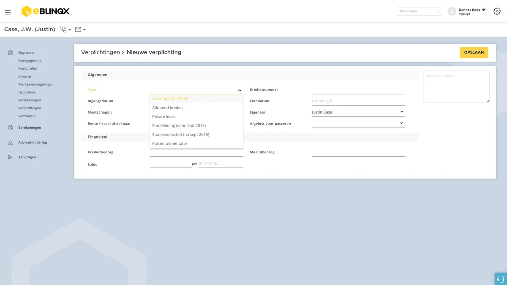
IT-12854: Bij het opvoeren van een financiele verplichting kun je niet langer kiezen voor de vorm 'Huurkoop'.
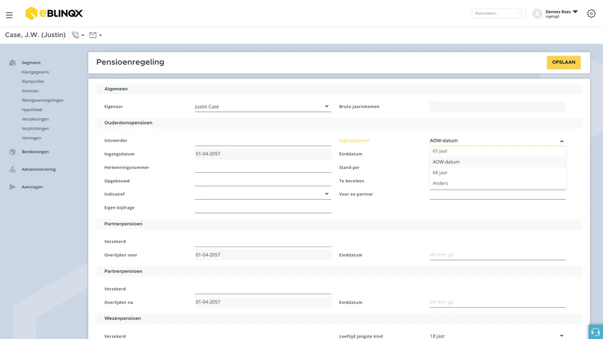
IT-19797: Voor de startdatum van het ouderdomspensioen kun je nu kiezen uit één van de volgende opties via een dropdownmenu: 65 jaar, de AOW-datum, 68 jaar (pensioenrichtleeftijd) of een andere datum. Standaard prefillen wij de ingangdatum met de AOW-datum van de klant, waarna deze kan worden overschreven door de adviseur. De gekozen optie wordt automatisch ingevuld als referentiedatum voor het partnerpensioen.
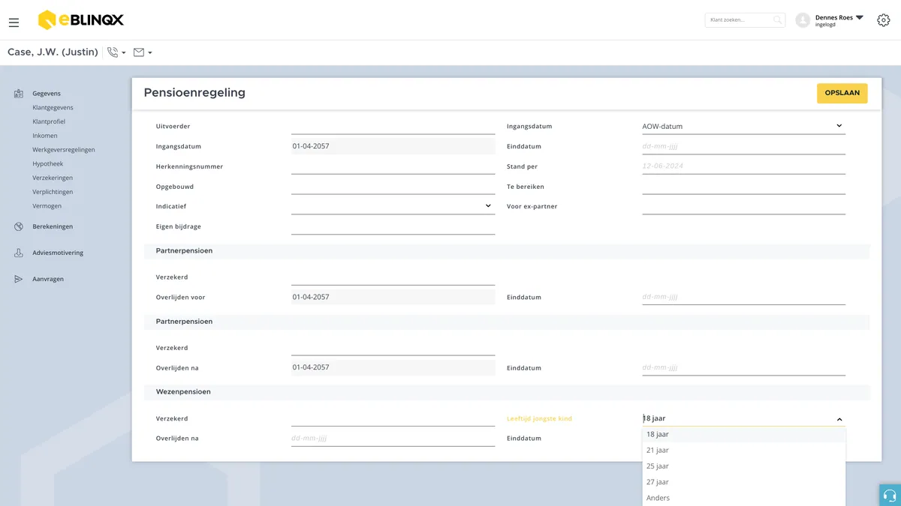
IT-19797: Voor de einddatum van het wezenpensioen kun je nu kiezen uit een van de volgende opties via een dropdownmenu: 18 jaar, 21 jaar, 25 jaar, 27 jaar of een anders. Standaard staat de einddatum geprefilled met leeftijd 18 jaar, waarna deze kan worden overschreven door de adviseur.
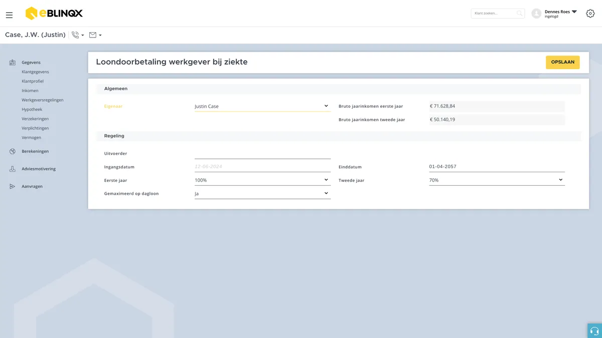
IT-19797: We vullen de einddatum van de WULBZ (Wet Uitbreiding Loondoorbetalingsplicht bij Ziekte) vanaf nu automatisch in met de AOW-datum en de startdatum met de huidige datum. In het eerste jaar van ziekte bedraagt de uitkering 100% van het laatst verdiende salaris, tot het maximum dagloon. In het tweede ziektejaar bedraagt de uitkering 70% van het laatst verdiende salaris, ook weer tot het maximum dagloon. De automatisch ingevulde velden door eBlinqx Hypotheekadvies kunnen door de adviseur worden aangepast.
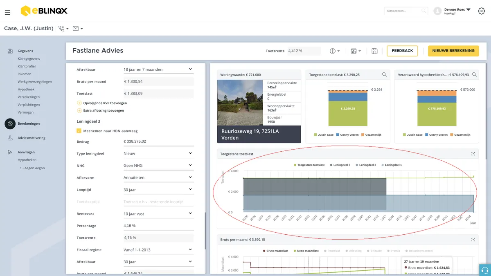
IT-20121: Voor alle adviseurs hebben wij de zogenaamde 360 Toetsmomenten ingevoerd. Dit betekent dat de adviseur niet alleen bij het begin van de hypotheek inzicht krijgt in de verantwoordelijke toetslast, maar dat wij gedurende de hele looptijd van de hypotheek alle toetsmomenten bekijken. Hierbij worden de veranderingen in inkomen en verplichtingen elke maand opnieuw berekend.
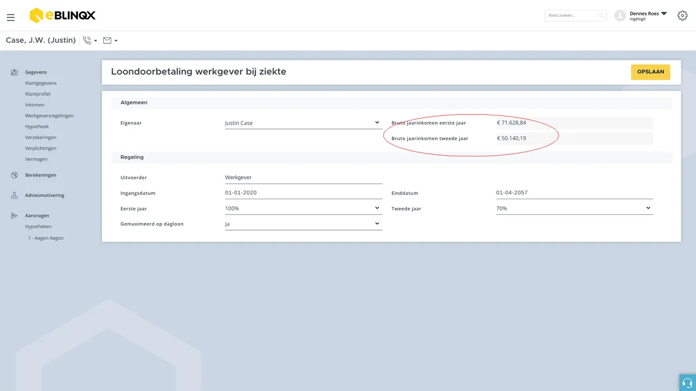
IT-19970: Wet uitbreiding loondoorbetaling bij ziekte (WULBZ). In het onderdeel 'Werkgeversregelingen' hebben wij bij de rubriek 'Loondoorbetaling bij ziekte' twee nieuwe berekende velden toegevoegd. Hiermee kan de adviseur het inkomensrisico bij langdurige ziekte in kaart brengen en analyseren. Er zijn twee opties:
- De klant ontvangt een percentage van zijn salaris in het 1e en 2e jaar.
- De klant ontvangt een percentage van zijn salaris in het 1e en 2e jaar, met een maximumsalaris dat overeenkomt met het dagloon (€ 71.628 per jaar).
De jaarinkomens tijdens de WULBZ worden weergegeven in de grijze berekende velden rechtsboven.
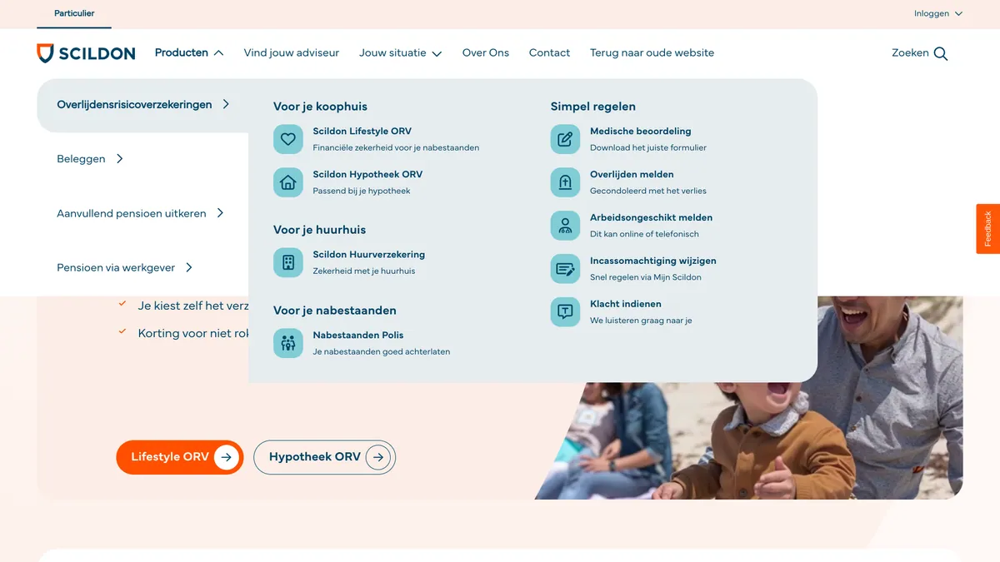
IT-15098: Aan het onderdeel 'Verzekeringen samenstellen' hebben wij twee overlijdensrisicoverzekeringen van Scildon toegevoegd. Met de overlijdensrisicoverzekeringen van Scildon krijgt jouw klant extra financiële zekerheid en minder zorgen voor zijn of haar nabestaanden.
- Zekerheid en minder zorgen voor de nabestaanden van jouw klant
- Je klant kiest zelf het verzekerde bedrag en de looptijd
- Korting voor niet-rokers en als jouw klant wil stoppen met roken
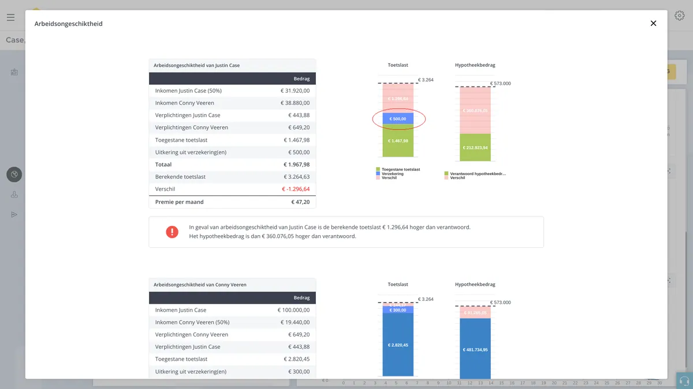
IT-18570: Bestaande verzekeringen in het advies. De bestaande overlijdensrisico- en woonlastenverzekeringen worden nu automatisch opgenomen in het advies. Op basis van de gedragscode of het consumptief besteedbaar inkomen (CBI) krijgt de klant eerst te zien wat zijn verantwoordelijke toetslast of zijn consumptief besteedbaar inkomen is na een life event, inclusief de lopende verzekeringen. Daarna kan de adviseur een passend advies geven over de nieuw af te sluiten verzekeringen.
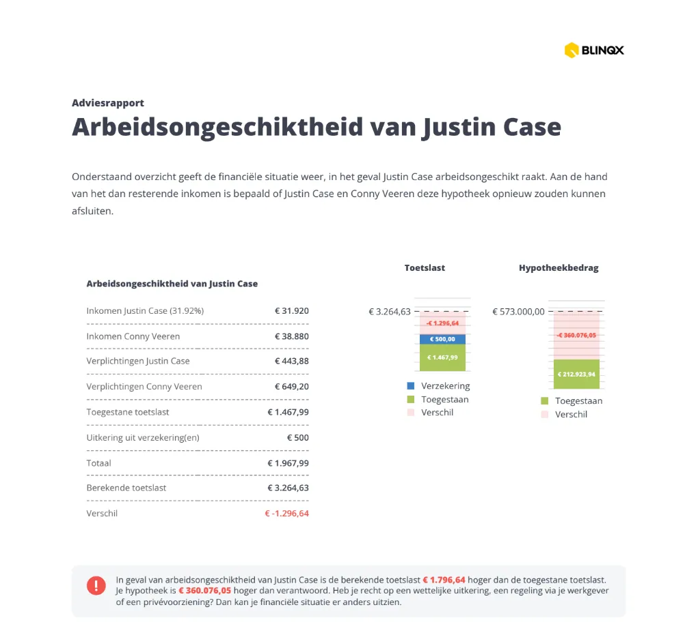
IT-18570: Bestaande verzekeringen in het adviesrapport. We hebben aan het adviesrapport staafdiagrammen toegevoegd die laten zien wat de impact van de bestaande overlijdensrisico- en woonlastenverzekeringen is op de verantwoorde toetslast of het consumptief besteedbaar inkomen (CBI) na een life event.
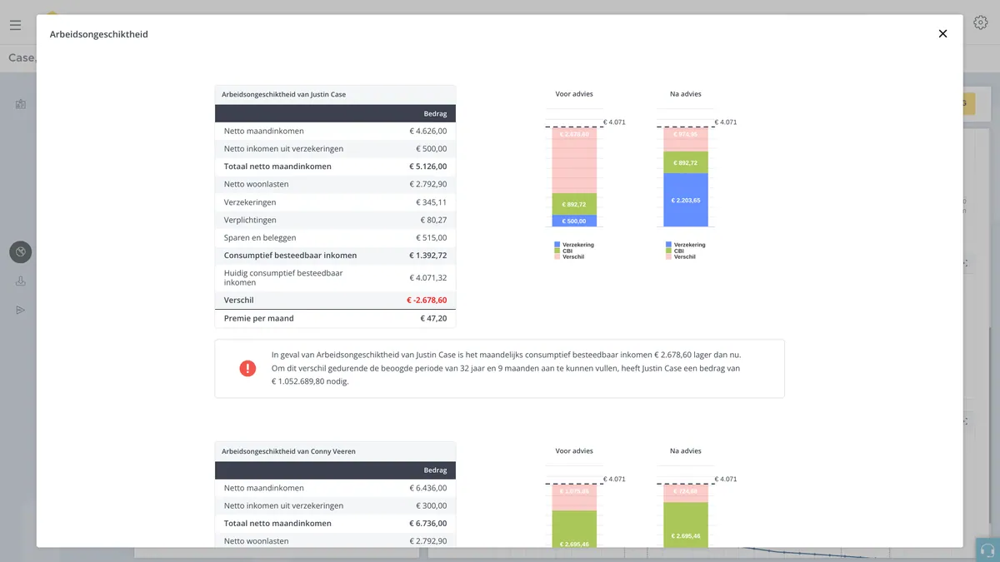
IT-19749: Consumptief Besteedbaar Inkomen (CBI) voor en na advies. Bij het adviseren op basis van Consumptief Besteedbaar Inkomen (CBI) hebben wij twee staafdiagrammen toegevoegd aan het adviesrapport. Deze diagrammen laten zien wat de impact is van een lopende overlijdensrisico- en/of woonlastenverzekering op het consumptief besteedbaar inkomen, en hoe de inkomenssituatie eruitziet als de klant het advies van de hypotheekadviseur opvolgt.
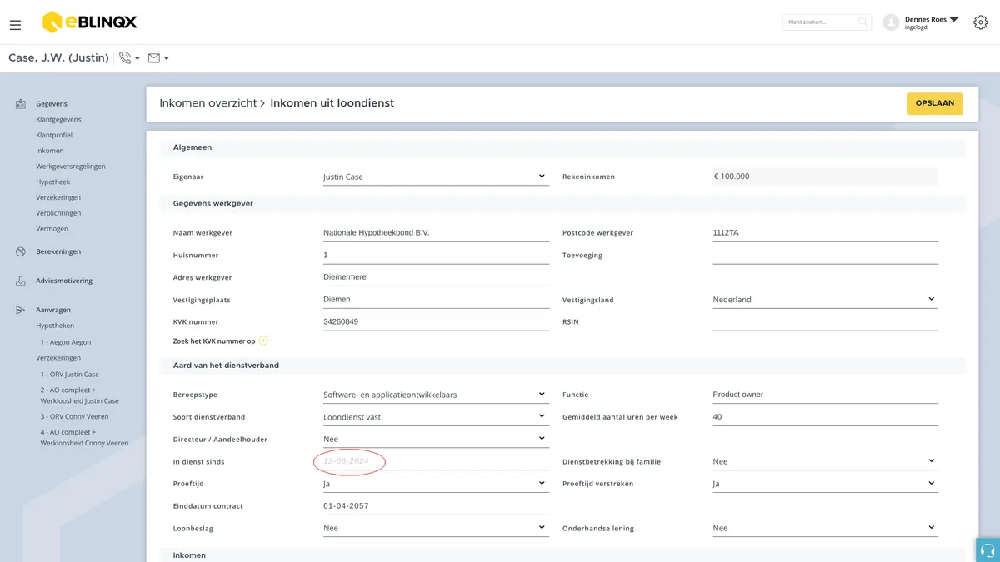
IT-20109: In de inventarisatiemodule hebben we bij het onderdeel 'Inkomen' voor inkomen uit loondienst het veld 'In dienst sinds' automatisch ingevuld met de huidige datum. Dit veld hoeft niet meer verplicht ingevuld te worden. De adviseur kan de datum aanpassen, waarna de nieuwe waarde wordt opgeslagen.
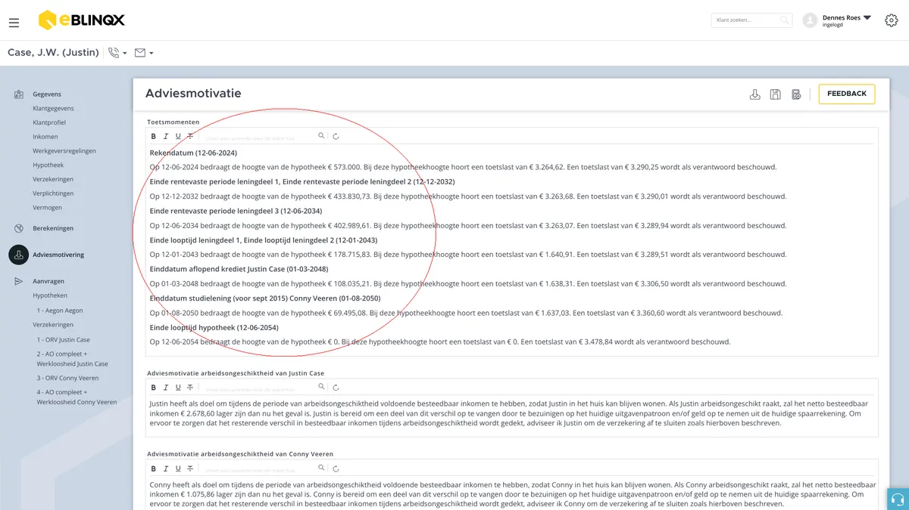
IT-19097: In het onderdeel 'Adviesmotivering' hebben we de tekst voor de (360) toetsmomenten nu samengevoegd in één tekstvak.
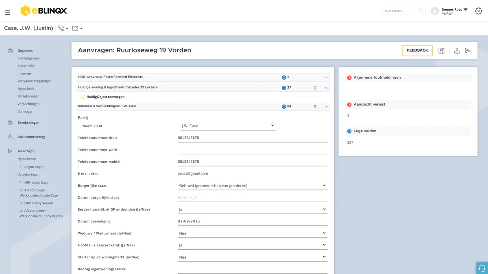
In het HDN-aanvraagformulier hebben we de volgende velden vooraf ingevuld met de gegevens uit de applicatie:
- IT-18631: Productcategorie aan het LX-formulier
- IT-19932: Inkomensverklaring ondernemer
- IT-19934: Garage aanwezig (Ja/Nee)
- IT-19935: Recreatieve bewoning (Ja/Nee)
- IT-19936: Bron waardebepaling
- IT-19937: Verkoop onder voorwaarden (Ja/Nee)
- IT-19939: Leningdeelnummer bestaande hypotheek
- IR-19940: Einddatum renteaftrek
- IT-19941: Bruto hypotheeklasten per jaar
- IT-19944: Rechtsvorm onderneming
- IT-19945: Ingangdatum onderneming
- IT-19946: Einddatum leningdeel
- IT-19958: Huidige woning verkopen (Ja/Nee)
- IT-19958: Onvoorwaardelijke verkocht (Ja/Nee)
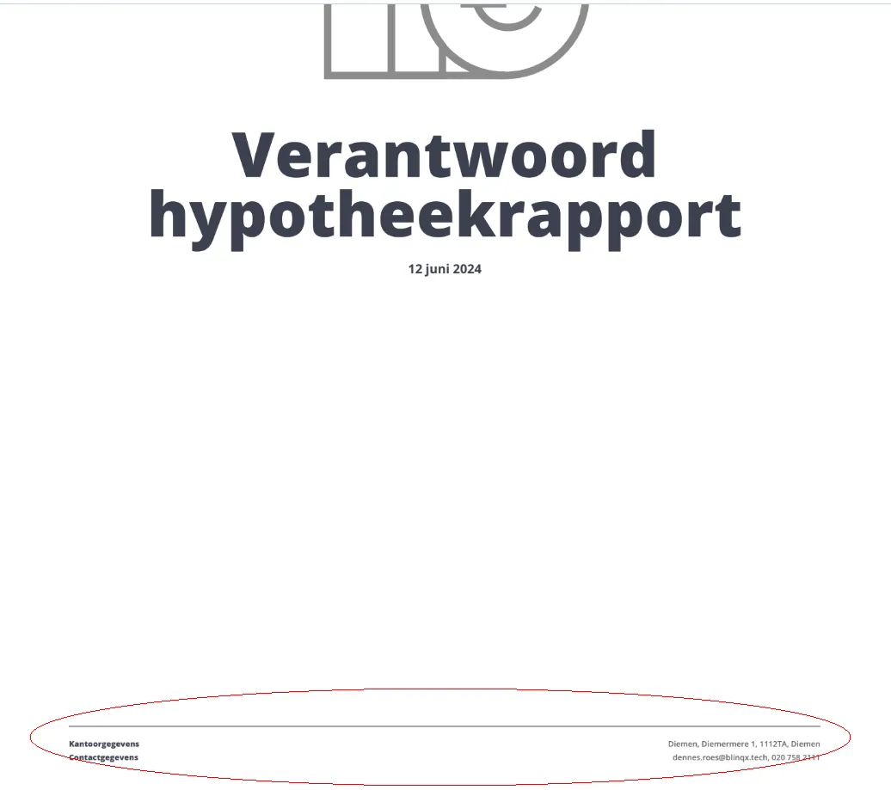
IT-20039: We hebben de voetnoot in het adviesrapport/samenvatting aangepast. Vaak logt de binnendienstmedewerker in om namens de adviseur het adviesrapport te downloaden/printen. Tot voor kort verschenen echter overal in de voetnoot de NAW- en contactgegevens van de binnendienstmedewerker in plaats van die van de adviseur. Dit is nu gecorrigeerd.
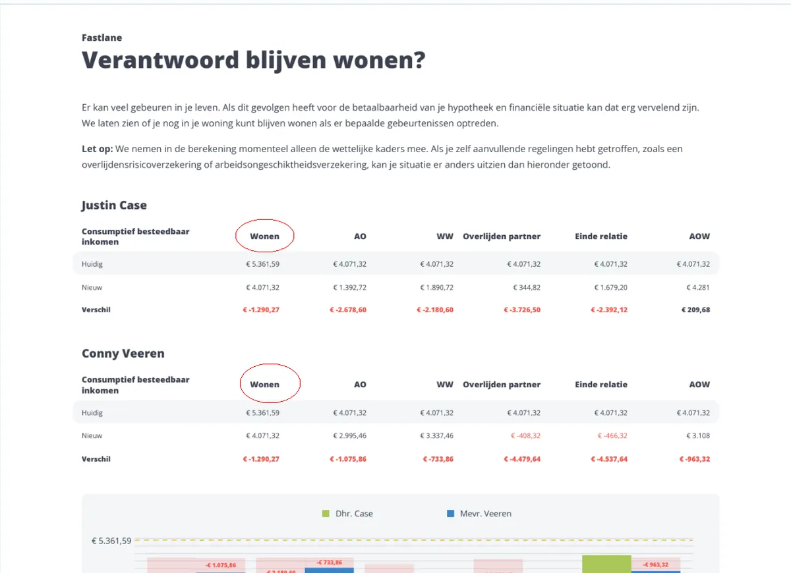
IT-20037: Wij hebben, bij het adviseren op basis van Consumptief Besteedbaar Inkomen (CBI) het label 'Huidig' bij het onderdeel 'Verantwoord blijven wonen' in het adviesrapport aangepast in 'Wonen'.